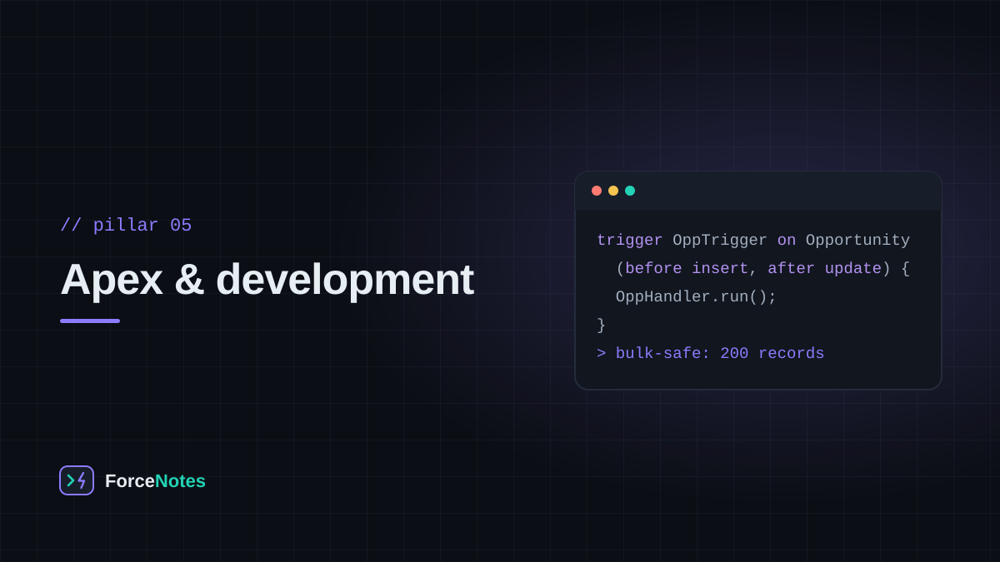
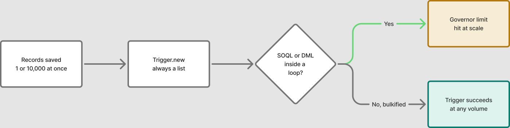

When Flow genuinely can't do it — complex logic, callouts, or true bulk processing — you write Apex. The catch is that Apex runs inside strict shared limits, and code that works on one record can fail on two hundred.

A trigger is Apex code bound to an object's save event — before insert, after update, before delete, and so on. Inside a trigger, Trigger.new holds the incoming records and Trigger.old holds their previous state, always as a list — because Salesforce can save one record or ten thousand in a single transaction, and your trigger has to handle both the same way.
That requirement has a name: bulkification. A trigger that runs a SOQL query or DML statement inside a loop over Trigger.new works fine in the UI with one record, and then fails the moment someone imports two hundred through Data Loader.

SOQL (Salesforce Object Query Language) queries one object at a time, including its related records — SELECT Id, Name, (SELECT LastName FROM Contacts) FROM Account. SOSL (Salesforce Object Search Language) searches across multiple objects at once for a text term, closer to a search bar than a database query. Reach for SOQL when you know which object you need; reach for SOSL when you're searching by keyword across several.
Because Salesforce is a shared, multi-tenant platform, every transaction runs inside hard caps called governor limits — a ceiling on SOQL queries, DML statements, CPU time, and more, per transaction. They exist so that one runaway script can't degrade the platform for every other customer. Hitting one throws an uncatchable exception, which is exactly why bulkification isn't optional.
Lightning Web Components (LWC) are the modern way to build custom UI on the platform, built on standard HTML, JavaScript, and CSS rather than a proprietary framework. They replaced the older Aura framework for new development, and can call Apex methods to read or write data, making them the usual front end for anything a Screen Flow can't handle cleanly.